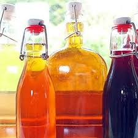

Mistela
Icono culinario de los Andes Tachirenses
Descripción
Bebida espirituosa tradicional infaltable en las celebraciones andinas. Nace de la equilibrada combinación de miche con almíbar especiado cocido junto a frutas aromáticas de la zona.
Ingredientes
Preparación Paso a Paso
El Melado Frutal: Colocar el agua en una olla, disolver el papelón y agregar los clavos, canela y frutas. Hervir hasta lograr un jarabe aromático y ligero.
Integración: Retirar del fuego y pasar por un colador para remover las especias (conservar las frutas si se desea). Dejar entibiar.
Unión con el Miche: Añadir paulatinamente el Miche Andino al almíbar mezclando de manera envolvente con una paleta de madera.
Conservación: Guardar en botellas de vidrio. Se puede degustar tibio inmediatamente o dejar asentar por unos días para mayor sabor.